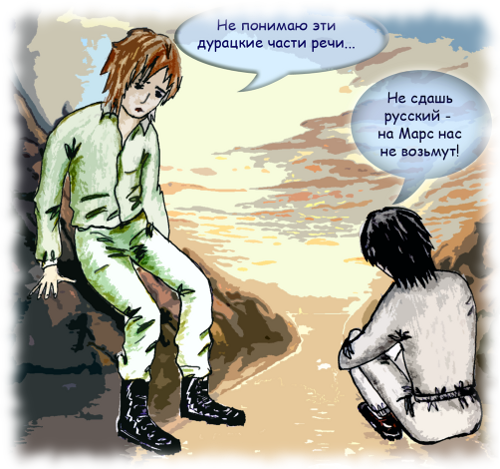
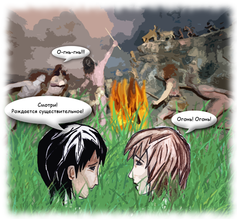
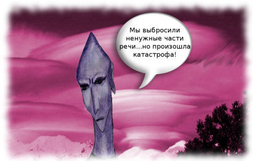
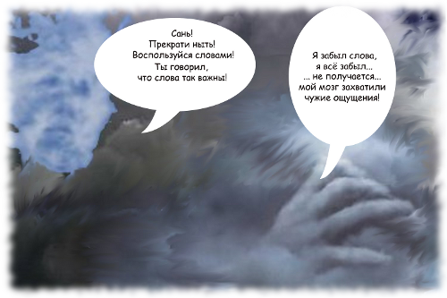

Знаешь, дружок, эта повесть о двух мальчишках и одном роботе, которые вздумали попутешествовать по параллельным мирам. Это Коль, Сань и их верный Роб.
Эй, дружок, вот и они, знакомься!
Давай послушаем, как они спорят.
Давай послушаем, как они спорят.

― Ну что ты всё смотришь? Говори прямо! ― не выдержал Коль.
― Что с тобой говорить, если ты не держишь слова! Ещё друг называется. У нас уговор был? Был. Договаривались
после сдачи экзаменов лететь на Марс? Договаривались! И что теперь?
― Я виноват, что ли, что попался такой трудный тест по русишу? Не понимаю эти дурацкие части речи, кому
они вообще нужны! ― Коль вытаращил глаза, лицо его покраснело.
Cань почувствовал, что перегнул палку:
― Просто я так мечтал попасть на Марс, а помнишь, что сказал твой отец? Если ты не сдашь русский, плакало
наше путешествие ― с собой он нас не возьмёт. А мне он сказал, что я как твой друг должен помочь тебе
с учёбой, иначе… А там настоящая экспедиция, космос, одним словом!
Он отвернулся, обхватил колени руками и уткнулся в них головой. Повисло тягостное молчание, между друзьями
протянулась невидимая пелена. Так длилось несколько минут. Вдруг Коль вскочил на ноги и как-то странно
зашипел:
― Зато у меня есть тайна… государственного масштаба…
Сань поднял голову, лицо его сделалось каменным, а глаза злыми. Он медленно и как-то надсадно произнёс:
― Так у тебя ещё от меня и тайны. Хорош!
Не спеша встав, мальчик медленно двинулся вниз по дорожке, весь его вид выражал чувство оскорблённого достоинства.
Коль стремглав подбежал к другу и схватил его за руку.
― Я случайно узнал… Короче, подслушал разговор отца. Помнишь, мы читали про машину времени? Ну, ту отцовскую
статью в журнале?
Давай послушаем, как они спорят.
― Ну что ты всё смотришь? Говори прямо! ― не выдержал Коль.
― Что с тобой говорить, если ты не держишь слова! Ещё друг называется. У нас уговор был? Был. Договаривались после сдачи экзаменов лететь на Марс? Договаривались! И что теперь?
― Я виноват, что ли, что попался такой трудный тест по русишу? Не понимаю эти дурацкие части речи, кому они вообще нужны! ― Коль вытаращил глаза, лицо его покраснело.
Cань почувствовал, что перегнул палку:
― Просто я так мечтал попасть на Марс, а помнишь, что сказал твой отец? Если ты не сдашь русский, плакало наше путешествие ― с собой он нас не возьмёт. А мне он сказал, что я как твой друг должен помочь тебе с учёбой, иначе… А там настоящая экспедиция, космос, одним словом!
Он отвернулся, обхватил колени руками и уткнулся в них головой. Повисло тягостное молчание, между друзьями протянулась невидимая пелена. Так длилось несколько минут. Вдруг Коль вскочил на ноги и как-то странно зашипел:
― Зато у меня есть тайна… государственного масштаба…
Сань поднял голову, лицо его сделалось каменным, а глаза злыми. Он медленно и как-то надсадно произнёс:
― Так у тебя ещё от меня и тайны. Хорош!
Не спеша встав, мальчик медленно двинулся вниз по дорожке, весь его вид выражал чувство оскорблённого достоинства. Коль стремглав подбежал к другу и схватил его за руку.
― Я случайно узнал… Короче, подслушал разговор отца. Помнишь, мы читали про машину времени? Ну, ту отцовскую статью в журнале?
Но путь в те миры не прост! Его охраняют Наблюдатели, которые ни за что не пропустят праздно шатающихся в иные пласты Вселенной.
Так вот, им нужна была причина для того, чтобы их пропустили! И эта причина нашлась! Дело в том, что Коль, мягко говоря, не дружил с русским языком, а это влекло за собой провал на экзамене, а провал на экзамене…, короче, одни неприятности! И Сань решил, что Колю непременно нужно попасть в прошлое, чтобы самому увидеть, как произошли части речи! И тут такое началось! Наблюдатели за параллельными мирами решили, что желание ПОЗНАВАТЬ достойно уважения и пропустили наших друзей!
И вот сначала они попадают в доистрические времена, где воочию видят, как рождаются слова, как человек обретает речь.
Последуем и мы за ними!
Последуем и мы за ними!
Продравшись сквозь них, мальчики осмотрелись, выбирая сторону, куда направиться, заметили небольшой просвет
между деревьями и побежали туда, махнув роботу на прощанье. Они забыли и про угрожающий рык, и про
другие возможные опасности ― настолько их захватила перспектива этого необычного путешествия. Так продвигались
они достаточно долго, как вдруг в отдалении послышались голоса: кто-то громко кричал. Наши путешественники
пригнулись к земле и стали осторожно пробираться в сторону крика. Уже начинало смеркаться, поэтому
пламя костра, который был виден издалека, хорошо освещало поляну. Вокруг огня сидело племя первобытных
людей, в основном, это были взрослые люди, и только один мальчик примерно их лет забавно дёргался,
подражая дикарю, который кружился вокруг пламени, издавая какой-то звук, остальные вторили ему:
― О-о-о-о! Го-ого-го-о!
― Они ещё не умеют говорить? ― спросил Коль.
― Наверное, они знают только междометия ― это самые первые слова. Как далеко мы заехали! ― ответил Сань.
Вдруг танцующий около костра стал указывать рукой на огонь и выкрикивать:
― О-гнь-гнь, о-гнь-гнь, о-гнь-гнь!
― Да это рождается слово огонь! ― в восторге воскликнул Сань. ― Мы у самого начала существования языка!
Тебя зачем сюда пустили? Чтобы ты перестал быть невежей, ― Сань не упустил случая съехидничать, ― поэтому
смотри ― рождается существительное! Огонь!
В это время всё племя вскочило на ноги и стало кружиться вокруг костра, выкрикивая:
― О-о-гнь! О-о-гнь!
Они явно радовались новому приобретению, и эта необузданная радость так увлекла мальчиков, что они, не
заметив, тоже вскочили на ноги и стали горланить:
― Огонь! Огонь!
Замолчали они только тогда, когда почувствовали, что вокруг полная тишина. Всё племя уставилось на пришельцев,
которые застыли в комичных позах, боясь двинуть рукой или ногой. Вдруг один из дикарей, здоровенный
детина, большими прыжками бросился к мальчикам c рёвом: „Враж!” ― причём так быстро, что те и пальцем
пошевелить не успели, как оказались схваченными железной рукой. Поначалу мальчики даже не испугались,
но вскоре поняли, что намерения у этих людей вовсе не дружелюбные. Детина подтащил их к огню, и всё
племя с интересом уставилось на необыкновенных людей. А дикарёнок смело подошёл к Колю и дотронулся
до блестящей пряжки на его ремне. Потом повернулся к свирепому дикарю и как-то просительно сказал:
„Дитё! Ай-ай-ай!” Свирепый, грубо оттолкнув мальчика, заорал:
― Ворог! Мерть! Ух-ух!
Двое дикарей схватили ребят и потащили куда-то. Вот тут-то путешественники во времени по-настоящему испугались
― ведь они действительно могут погибнуть! Неужели Роб им не поможет?! Коль отчаянно закричал:
― Роб! Роб! На помощь! ― но никто ему не откликнулся.

Последуем и мы за ними!
Продравшись сквозь них, мальчики осмотрелись, выбирая сторону, куда направиться, заметили небольшой просвет между деревьями и побежали туда, махнув роботу на прощанье. Они забыли и про угрожающий рык, и про другие возможные опасности ― настолько их захватила перспектива этого необычного путешествия. Так продвигались они достаточно долго, как вдруг в отдалении послышались голоса: кто-то громко кричал. Наши путешественники пригнулись к земле и стали осторожно пробираться в сторону крика. Уже начинало смеркаться, поэтому пламя костра, который был виден издалека, хорошо освещало поляну. Вокруг огня сидело племя первобытных людей, в основном, это были взрослые люди, и только один мальчик примерно их лет забавно дёргался, подражая дикарю, который кружился вокруг пламени, издавая какой-то звук, остальные вторили ему:
― О-о-о-о! Го-ого-го-о!
― Они ещё не умеют говорить? ― спросил Коль.
― Наверное, они знают только междометия ― это самые первые слова. Как далеко мы заехали! ― ответил Сань.
Вдруг танцующий около костра стал указывать рукой на огонь и выкрикивать:
― О-гнь-гнь, о-гнь-гнь, о-гнь-гнь!
― Да это рождается слово огонь! ― в восторге воскликнул Сань. ― Мы у самого начала существования языка! Тебя зачем сюда пустили? Чтобы ты перестал быть невежей, ― Сань не упустил случая съехидничать, ― поэтому смотри ― рождается существительное! Огонь!
В это время всё племя вскочило на ноги и стало кружиться вокруг костра, выкрикивая:
― О-о-гнь! О-о-гнь!
Они явно радовались новому приобретению, и эта необузданная радость так увлекла мальчиков, что они, не заметив, тоже вскочили на ноги и стали горланить:
― Огонь! Огонь!
Замолчали они только тогда, когда почувствовали, что вокруг полная тишина. Всё племя уставилось на пришельцев, которые застыли в комичных позах, боясь двинуть рукой или ногой. Вдруг один из дикарей, здоровенный детина, большими прыжками бросился к мальчикам c рёвом: „Враж!” ― причём так быстро, что те и пальцем пошевелить не успели, как оказались схваченными железной рукой. Поначалу мальчики даже не испугались, но вскоре поняли, что намерения у этих людей вовсе не дружелюбные. Детина подтащил их к огню, и всё племя с интересом уставилось на необыкновенных людей. А дикарёнок смело подошёл к Колю и дотронулся до блестящей пряжки на его ремне. Потом повернулся к свирепому дикарю и как-то просительно сказал: „Дитё! Ай-ай-ай!” Свирепый, грубо оттолкнув мальчика, заорал:
― Ворог! Мерть! Ух-ух!
Двое дикарей схватили ребят и потащили куда-то. Вот тут-то путешественники во времени по-настоящему испугались ― ведь они действительно могут погибнуть! Неужели Роб им не поможет?! Коль отчаянно закричал:
― Роб! Роб! На помощь! ― но никто ему не откликнулся.
Но там их настигают опасности, и им приходится бежать…
И они попадают в мир плоков, уродливый, опасный и невообразимый! Да…трудно пришлось им в этом мире!
Смотри-смотри, это плок!
Давай проникнем в мир плоков!
Давай проникнем в мир плоков!
Сколько продолжалось перемещение ― понять было невозможно, но вот оба друга уже осматриваются по сторонам:
вокруг возвышаются серые пики скал, небо совершенно фиолетовое, изредка его озаряют какие-то малиновые
вспышки.
― Где мы? Это не похоже на Землю, ― сказал Коль.
― Слушай, значит, мы продвигаемся не только по линии времени, но и по пространству? ― спросил Сань
робота.
Робот стал объяснять, что они передвигаются не по пространству видимой Вселенной, а по параллельным
пластам существования. Мальчикам настолько было трудно воспринять объяснение Роба, что тот, нарисовав
на экране колоду карт, сложенных веером, ткнул пальцем в точку их соприкосновения и сказал, что эта
точка позволяет заходить в любой мир. Но тут лекция была прервана неожиданным появлением странных
людей, которые, выйдя из-за скалы, окружили путников кольцом. Странность заключалась в заострённой
форме их голов, вытянутости тел и сером цвете лиц. Речь незнакомцев была отрывистой и неприятной.
― Следовать за нами! Подчиняться! Идти! ― команды раздавались одна за другой.
Ребята стали искать глазами робота, но его нигде не было! Видимо, они опять остались один на один с
миром. Но почему они понимают этих людей? Этого они объяснить не могли. Сопровождаемые конвоем мальчики
спустились с горы и увидели странные жилища, похожие на скалы ― их привели в город, но он был пустынен.
Один из сопровождающих обратился к ним:
― Назвать себя! Объяснить появление!
Сань собрался с духом и сказал:
― Земля. Путешествовать, ― он заметил, что говорит так же, как и они ― коротко и отрывисто.
Далее произошло нечто необычное: на поверхность возле наших героев рухнула какая-то металлическая капсула,
и в мгновение ока мальчиков всунули внутрь ― они даже не успели испугаться. В темной тесноте они
пытались понять ― что же всё-таки произошло? Их потрясывало, следовательно, они передвигались. Но
куда?

Давай проникнем в мир плоков!
Сколько продолжалось перемещение ― понять было невозможно, но вот оба друга уже осматриваются по сторонам: вокруг возвышаются серые пики скал, небо совершенно фиолетовое, изредка его озаряют какие-то малиновые вспышки.
― Где мы? Это не похоже на Землю, ― сказал Коль.
― Слушай, значит, мы продвигаемся не только по линии времени, но и по пространству? ― спросил Сань робота.
Робот стал объяснять, что они передвигаются не по пространству видимой Вселенной, а по параллельным пластам существования. Мальчикам настолько было трудно воспринять объяснение Роба, что тот, нарисовав на экране колоду карт, сложенных веером, ткнул пальцем в точку их соприкосновения и сказал, что эта точка позволяет заходить в любой мир. Но тут лекция была прервана неожиданным появлением странных людей, которые, выйдя из-за скалы, окружили путников кольцом. Странность заключалась в заострённой форме их голов, вытянутости тел и сером цвете лиц. Речь незнакомцев была отрывистой и неприятной.
― Следовать за нами! Подчиняться! Идти! ― команды раздавались одна за другой.
Ребята стали искать глазами робота, но его нигде не было! Видимо, они опять остались один на один с миром. Но почему они понимают этих людей? Этого они объяснить не могли. Сопровождаемые конвоем мальчики спустились с горы и увидели странные жилища, похожие на скалы ― их привели в город, но он был пустынен. Один из сопровождающих обратился к ним:
― Назвать себя! Объяснить появление!
Сань собрался с духом и сказал:
― Земля. Путешествовать, ― он заметил, что говорит так же, как и они ― коротко и отрывисто.
Далее произошло нечто необычное: на поверхность возле наших героев рухнула какая-то металлическая капсула, и в мгновение ока мальчиков всунули внутрь ― они даже не успели испугаться. В темной тесноте они пытались понять ― что же всё-таки произошло? Их потрясывало, следовательно, они передвигались. Но куда?
А знаешь, что позволило им выжить и победить? Только ВЕРНАЯ ДРУЖБА, только СПОСОБНОСТЬ ПОБЕДИТЬ СОБСТВЕННЫЕ СТРАХИ и только самая простая ЧЕЛОВЕЧЕСКАЯ ЛЮБОЗНАТЕЛЬНОСТЬ!
А потом следовал пласт прозрачных сущностей и смертоносного излучения! И опаснейшие эксперименты Саня! Да что рассказывать, разве это перескажешь, читай сам, дружок!
А, забыл о планете-разуме! На ней наши путешественники чуть не погибли! Их расщепили на мельчайшие частицы, приняв за вредоносный вирус…
Послушай, дружок! Потерять собственное тело! Какой ужас!
Давай-ка заглянем на эту планету.
Давай-ка заглянем на эту планету.
Коль почувствовал, что к нему возвращается сознание, но что-то явно было не так, но вот что, он никак
понять не мог. Где же Куатт с Санем? Коль видел вокруг себя только серую однородную массу ― она
клубилась, напоминая земные грозовые тучи. Было ощущение, что она была везде и даже внутри ― Колю
стало страшно.
Он позвал Саня, но голоса своего не услышал. Что происходит? Коль вдруг понял, что его так пугало
― он не видел себя, то есть он ощущал себя, но не видел ни рук, ни ног, ни туловища… Только это
серое месиво! Тут его охватил настоящий ужас, и он стал вопить, зовя своих друзей. Коль так громко
кричал, что не сразу осознал, что его зовут ― это был Сань!
― Успокойся! Кричи не кричи ― этим не поможешь! Ты понял, что мы потеряли свои тела? Мы превратились
в эту массу! Где ты и где я? Осталось одно сознание… пока… Может, и оно рассосётся, и мы перестанем
осознавать себя, а это всё равно, что умереть. Теперь я понял, о чём предупреждал Наблюдатель.
Сань опасался, что своими словами вызовет у Коля новый взрыв ужаса. Да и не мудрено! Он сам был близок
к отчаянию. Но, к своему удивлению, услышал спокойный голос Коля:
― Фф-у-у, теперь хоть понятно, что произошло, а то уж я думал, что схожу с ума! А ты заметил какие-то
посторонние мысли в голове? Они пытаются вызвать чувство покоя, равнодушия… Может, это и идёт воздействие
на наш мозг? А где интересно Куатт? Почему он не отзывается? Сань, ты где? Не молчи!
― Не пугайся, я здесь! Думаю, что нам делать. У нас очень мало времени ― я тоже чувствую воздействие.
Они хотят, чтобы мы растворились в их общем разуме… мне так кажется.

Давай-ка заглянем на эту планету.
Коль почувствовал, что к нему возвращается сознание, но что-то явно было не так, но вот что, он никак понять не мог. Где же Куатт с Санем? Коль видел вокруг себя только серую однородную массу ― она клубилась, напоминая земные грозовые тучи. Было ощущение, что она была везде и даже внутри ― Колю стало страшно.
Он позвал Саня, но голоса своего не услышал. Что происходит? Коль вдруг понял, что его так пугало ― он не видел себя, то есть он ощущал себя, но не видел ни рук, ни ног, ни туловища… Только это серое месиво! Тут его охватил настоящий ужас, и он стал вопить, зовя своих друзей. Коль так громко кричал, что не сразу осознал, что его зовут ― это был Сань!
― Успокойся! Кричи не кричи ― этим не поможешь! Ты понял, что мы потеряли свои тела? Мы превратились в эту массу! Где ты и где я? Осталось одно сознание… пока… Может, и оно рассосётся, и мы перестанем осознавать себя, а это всё равно, что умереть. Теперь я понял, о чём предупреждал Наблюдатель.
Сань опасался, что своими словами вызовет у Коля новый взрыв ужаса. Да и не мудрено! Он сам был близок к отчаянию. Но, к своему удивлению, услышал спокойный голос Коля:
― Фф-у-у, теперь хоть понятно, что произошло, а то уж я думал, что схожу с ума! А ты заметил какие-то посторонние мысли в голове? Они пытаются вызвать чувство покоя, равнодушия… Может, это и идёт воздействие на наш мозг? А где интересно Куатт? Почему он не отзывается? Сань, ты где? Не молчи!
― Не пугайся, я здесь! Думаю, что нам делать. У нас очень мало времени ― я тоже чувствую воздействие. Они хотят, чтобы мы растворились в их общем разуме… мне так кажется.
Вот тут ты узнаешь, что значит НАСТОЯЩАЯ ДРУЖБА! Она может творить невозможное!